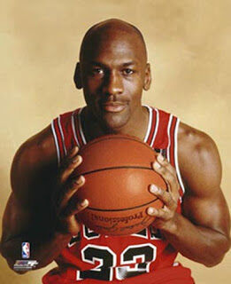

Michael szülei, James és Deloris New York szociálisan igencsak elmaradott negyedében, Brooklynban laktak. Felismerték, hogy ez a környezet nem alkalmas gyermekeik számára, hogy tartalmas életet élhessenek, így Michael 7 éves korában az észak-karolinai Wilmingtonba költöztek. Itt James egy elektronikai üzemben, Deloris pedig egy bankban dolgozott.A helyi Emsley A. Laney Gimnáziumban kezdte bontogatni szárnyait, de az első két évében kevés sikerrel. Hiába volt labdabiztos, technikás, nem volt elég magas. Második nyarán hirtelen nőtt 10 centimétert, így harmadik évében már nem lehetett kihagyni a csapatból. Utolsó évében beválasztották a legjobb középiskolások csapatába, ezt 29 pontos, 11 lepattanós és 10 gólpasszos átlagával érdemelte ki. Ez az eredmény jó ajánlólevél volt a későbbiekre nézve, több egyetemi játékosmegfigyelő figyelmét is felkeltette.
Első profi éve
Az 1984-es drafton a harmadik választott lett, a Houston Hakeem Olajuwont, a Portland Sam Bowie-t részesítette előnyben vele szemben. A Chicago képviselője, Rod Thorn alig hitt a szemének, hogy ekkora kincset hagytak meg nekik. Az eredmények rögtön igazolták az elvárásokat, az addig a liga egyik leggyengébb csapatának számító Bulls kapásból bejutott a rájátszásba, ahol a Milwaukee első körben kiverte őket. Michael 28,2 pontos átlagával elnyerte az Év újonca címet és az NBA All Star-csapatába is beválasztották. Első évét végeredményben csapata legponterősebb (28,2 pont), legjobban lepattanózó (6,5 lepattanó), legtöbb gólpasszt adó (5,9 assziszt) és legtöbb labdát szerző játékosaként zárta.

Az első Bulls-korszak
Az 1990-91-es szezonban végre megtört az átok, az alapszakasz MVP-ként másodszor tündöklő Jordan (31,5 pontos, 6 lepattanós és 5,5 gólpasszos átlaggal) vezetésével csapata 61 győzelmet aratva simán bekerült a rájátszásba. Ráadásul újra helyet kapott az Év védekező ötösében is. Ekkor már Scottie Pippen is All Star szinten játszott. Az első két körben a Philadelphiát és a New Yorkot legyőzve jutottak be a keleti főcsoport döntőjébe. Ott az ősi rivális Detroit várt rájuk. Meglepően simának mondható eredménnyel, 4-1-es Bulls győzelemmel zárult a döntő, így Michael megszerezte élete első bajnoki címét. Ebben a párharcban is órási szerepet vállalt, miután ezentúl mindig, mikor bajnokok lettek, megválasztották a Döntő játékosának. Ezidáig 7 gólkirályi címet nyert, háromszoros bajnoknak és MVP-nek mondhatta magát. Mondhatni, elért mindent, amit kosárlabdázó elérhet. 993. július 23-án két tinédzser megölte Michael édesapját, miközben megpróbálták ellopni a kocsiját. Így 1993 őszén ezekkel a szavakkal bejelentette a visszavonulását: „Elértem a karrierem csúcsát. Úgy érzem, már semmi mást nem tudok bizonyítani.”